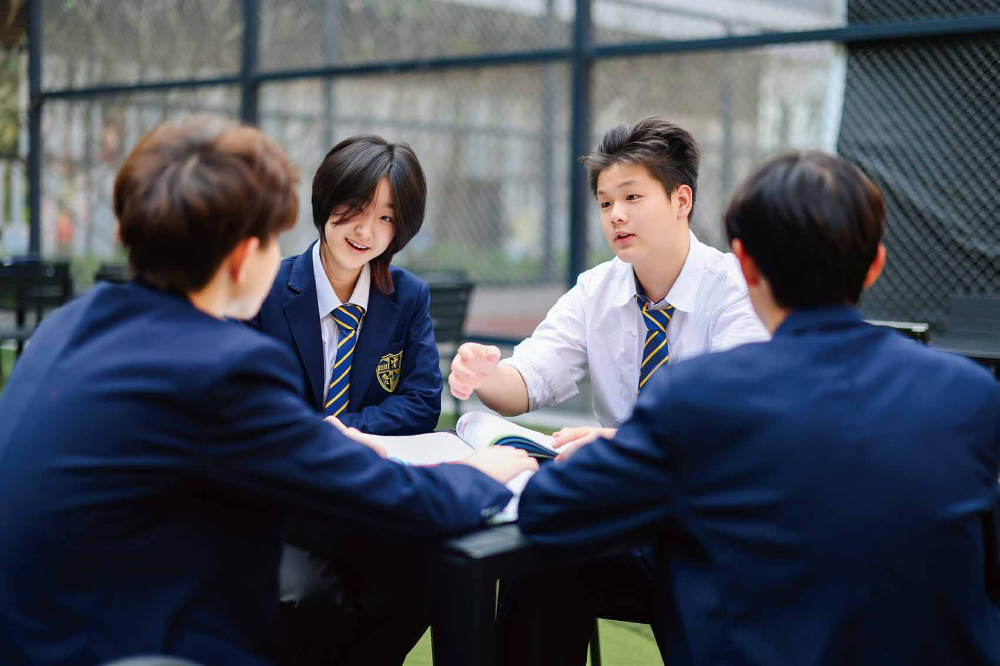
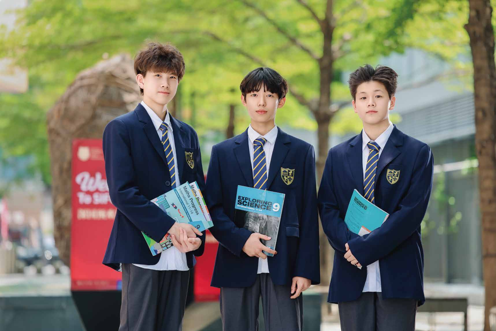

凌云书院 G9X
强化英语学术写作、数学科学、项目研究与国际课程学习习惯。

Academies
书院体系承接初中部学习基础，帮助学生在更高年级形成学术强项、个性方向与长期目标。
强化英语学术写作、数学科学、项目研究与国际课程学习习惯。
面向高阶课程、竞赛方向、作品集和升学准备建立更清晰节奏。
把个人兴趣、导师资源、项目成果和长期目标放进一张成长地图。

Academy Pathways
凌云书院强调进阶学术与国际课程衔接，青云书院强调个人路径、导师资源与作品证据。两条路径共同服务于一个目标：让学生在更高年级拥有清楚的自我认知和可持续的行动力。
预约了解书院体系


Qingyun Middle 回到初中部课程
Visit
预约了解书院体系